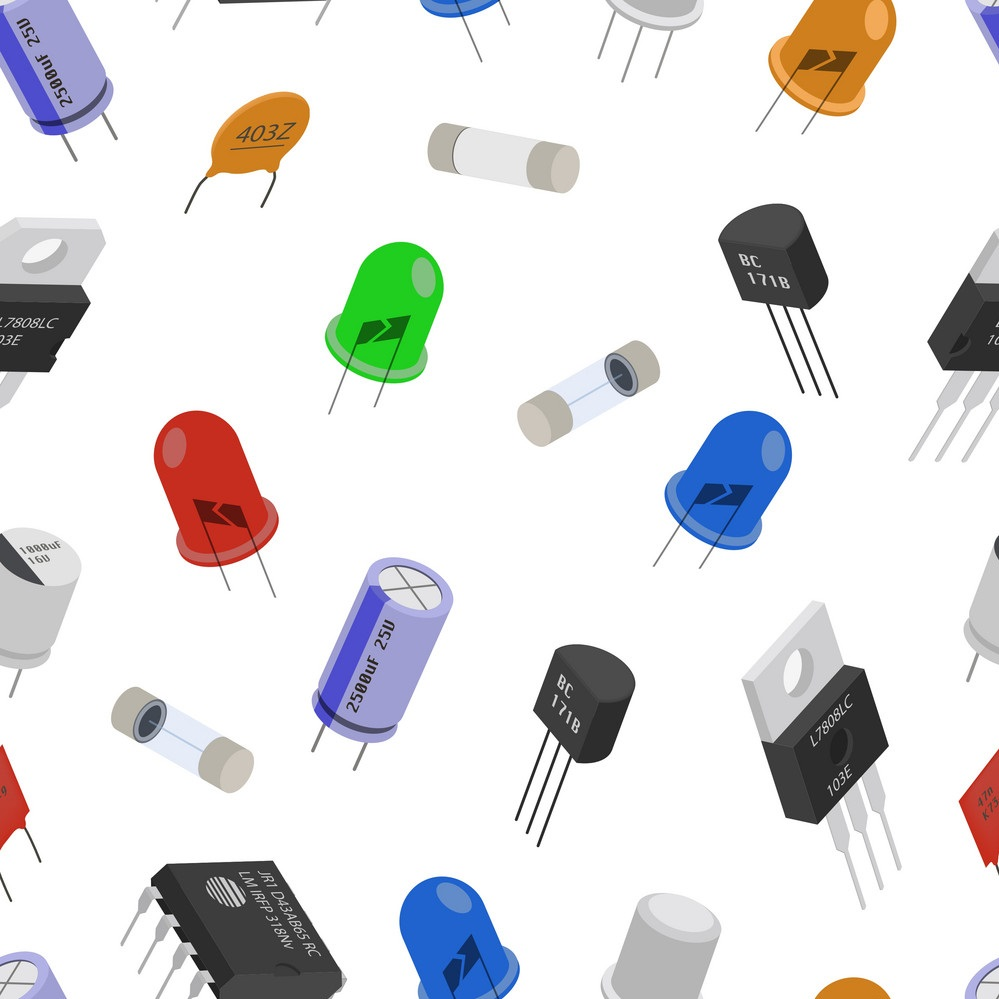
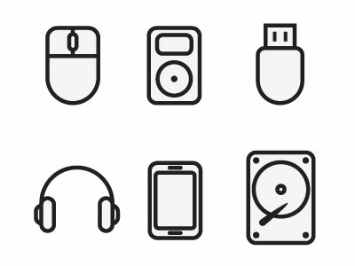
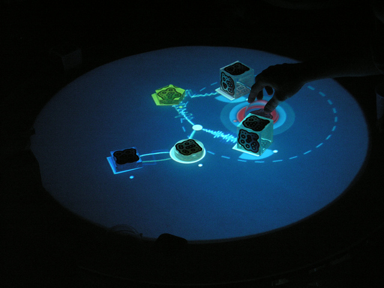

Eksamensspørgsmål 6
Med udgangspunkt i Dourish gør rede for faserne i den historiske udvikling af bruger interfaces: fra symbolsk, tekstlig, grafisk, visuelt metaforisk og videre til "embodied interaction".
Bruger interfaces i historisk udvikling
Electrical
Brugen af elektriske komponenter til at generere signaler
Symbolic
Skiftet fra binære tal til symbolsk, forståeligt for mennesker
Textual
Et skift der førte til mere tekst
Graphical

Skiftet hvor man skiftede ordene ud med billeder, og hvor "områderne" på skærmen begyndte at betyde mere
Embodied Interaction
Embodied interaction er interaktion med computersystemer, der optager vores verden, og som udnytter dette faktum, når de interagerer med os